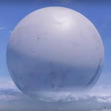

Destiny 2 is a free-to-play online first-person shooter video game developed by Bungie. It was originally released as a pay to play game in 2017 for PlayStation 4, Xbox One, and Windows. It became free-to-play, utilizing the games as a service model, under the New Light title on October 1, 2019, followed by the game's release on Stadia the following month, and then PlayStation 5 and Xbox Series X/S platforms in December 2020.
In Destiny you "the guardian" is the main character. you are the one of the best guardians with a long list of acevments witch includes but is not limited to
the guardian is also a very sosial individual, this combined with ther skill ment they quicly became frends with multiple notable individuals like
The light is the power, grated by the traveler to the guardians making them imortal and giving them spesial abilities.
The dark is the counter part of the light, granted by the travelers brother "the veil" and works more or less the same as the light.
The Traveler is a mysterious spherical paracausal entity associated with the Light. Massive in scale, it hangs motionless in the skies above the Last City built in its shadow. Once responsible for terraforming the worlds of the Sol System, it was rendered largely inactive during the Collapse, when its ancient enemy arrived and launched a devastating assault on human civilization.
The Vanguard are elite guardians who coordinate the last city's defenses, organize assaults on enemy strongholds and assassinations of their leaders